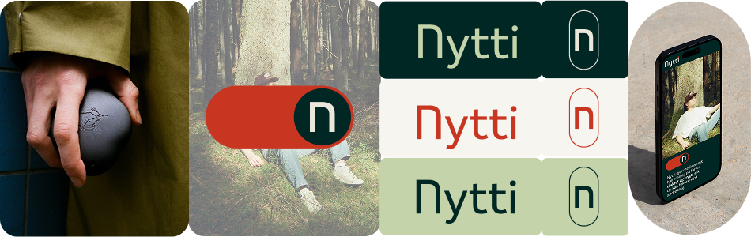
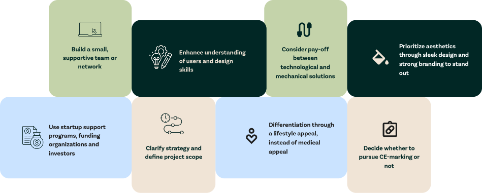
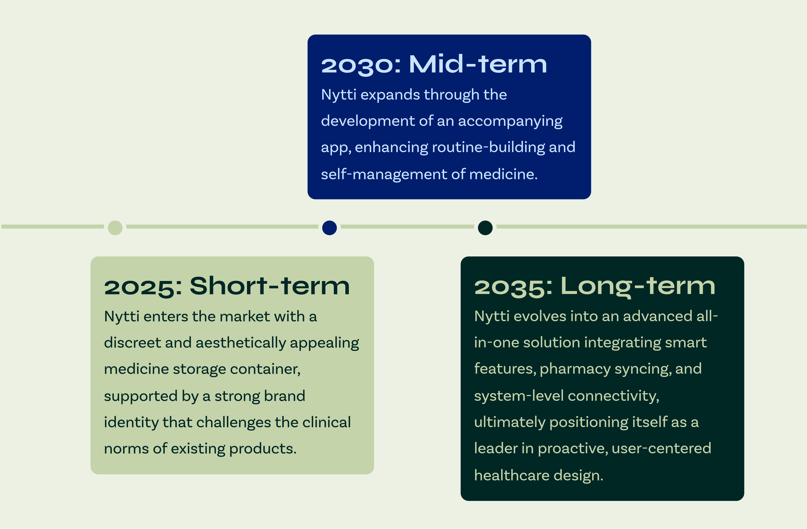
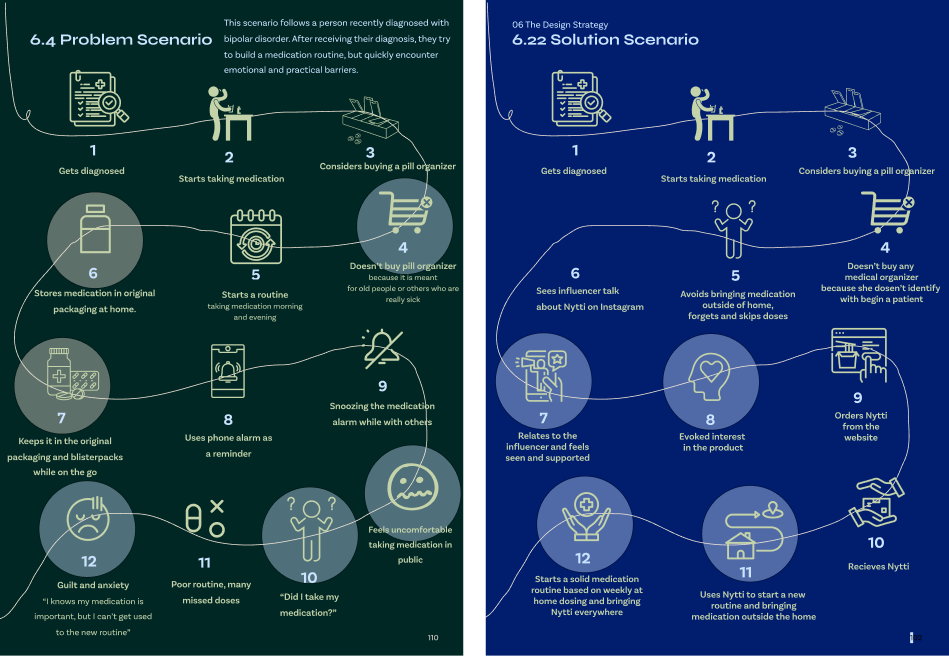

TPD4166 - Design 8, Strategisk design
Vår 2025
Nytti - Redesign of Medication Management as a Lifestyle Product
Keywords: strategy, lifestyle product, UX, human-centered design, usability
This project reimagines daily medication management as a lifestyle-oriented experience. Developed in the Strategic Design course at NTNU for entrepreneur Hallgrim Bjørvik, “Nytti” combines a physical product and an app to reduce stigma, improve usability, and support long-term routines. This project was conducted for Bjørvik at the very beginning of his start-up. Today, his startup has evolved into Dtablet, and you can view the company page here:
https://www.dtablet.no/Fellow students: Caroline Foss Nersnæs, Vilde Hvam og Ellen Sofie Myrmo-Silset
INTRODUCTION
By focusing on usability, personalization, and lifestyle integration, the concept “Nytti” seeks to reduce friction, support routines, and empower users to maintain independence.

MOTIVATION
The motivation behind this project lies in a desire to improve the everyday experience of people who rely on medication. Current solutions for pill management are often too clinical or lack the functionality needed to support long-term use and changing needs. The goal was to explore how design and technology together can reduce stigma, enhance usability and support independence to make medication routines feel more integrated into daily life.
DESIGN GOALS
Goal 1: Reduce the everyday friction of managing pills. Goal 2: Destigmatize the act of taking medication. Goal 3: Help people build and sustain medication routines through personalized, digital support. Goal 4: Extend user independence and reduce reliance on formal care systems through an integrated, intelligent solution.
APPROACH
Throughout the process we have made use of several methods. The insight provided derives from a mixture of literature reviews, qualitative and quantitative interviews, email correspondence and client meetings. The insights were made sense of by design and strategy methods like personas and problem scenarios, MoSCoW matrixes, competitor analyses, STEEP analyses and mind mapping. This painted a picture of current conditions and future scenarios, which served as a foundation for the strategic direction. Key take-aways from internal and external analysis:

RESULTS
The result of this project is a strategic concept for “Nytti”, a lifestyle-oriented medication management product that evolves over time through three short-, mid- and long-term development phases: a physical box with strong branding, a supporting app, and an advanced all-in-one system. Together, these elements form a roadmap that balances short-term feasibility with long-term innovation, aiming to build user trust, reduce stigma, and promote routine through thoughtful design.

Each stage in the strategy is supported by targeted audience and stakeholder involvement, market position, communication strategy and aligned design goals, values and missions. The strategy is carefully timed to keep users from being overwhelmed by complex features from the start, it rather builds up trust by gradually delivering value at each step.
